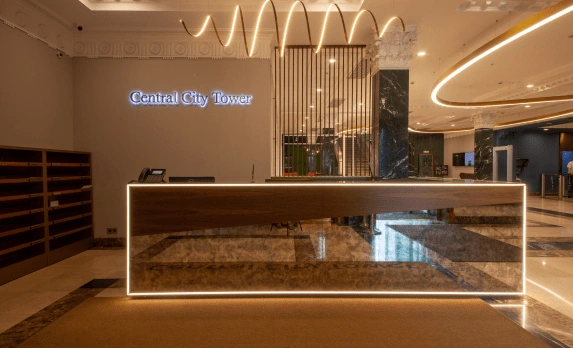
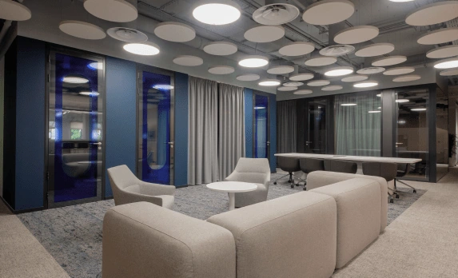
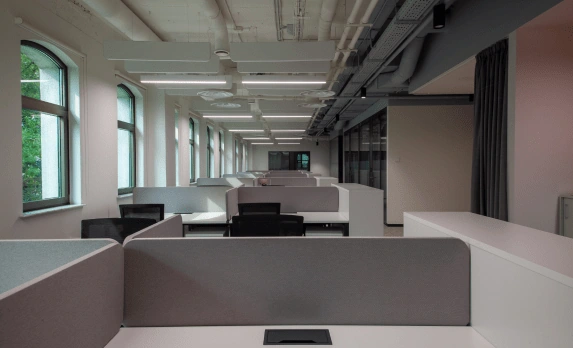
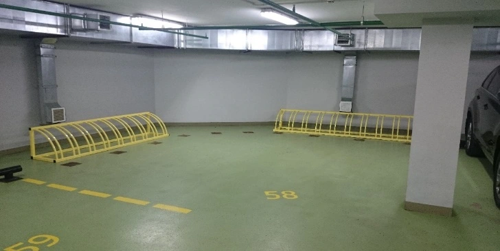

Замоскворечье · Класс A
Central City Tower
Бизнес-центр класса A на набережной в историческом центре Москвы. Выразительная архитектура и панорамные виды сочетаются с инфраструктурой для повседневной работы.
Запросить презентациюНапишите нам — направим актуальную презентацию объекта.

м² общей площади
м² арендуемой площади
Парковочных мест
Класс бизнес-центра
Пространство
для вашей команды.
Для компаний, которым важны центральный адрес, представительный офис и развитая деловая среда.
Поможем познакомиться с объектом и обсудить подходящий формат аренды. Актуальные условия и доступные помещения уточняются при обращении.
Написать намГалерея
Посмотрите ближе.



Всё для
рабочего дня.
Инфраструктура бизнес-центра помогает решать ежедневные задачи рядом с офисом.
Ресторан корпоративного питания
Кафе BLACK COFFEE
Ресторан UNICA OSTERIA
Подземная и гостевая парковка
Как добраться
Овчинниковская наб., 20, стр. 1–2
Рядом со станциями «Новокузнецкая» и «Третьяковская». Гостевая парковка — перед центральным входом строения 1. Посещение офиса согласуйте заранее.

Овчинниковская наб., 20, стр. 1–2
Интерактивная Яндекс.Карта загрузится после нажатия.
Для будущих арендаторов
Вопросы
об объекте.
Как договориться о просмотре?
Напишите на arenda@umacapital.ru и укажите интересующий бизнес-центр. Команда согласует с вами время посещения.
В каком режиме доступен офис?
Режим допуска сотрудников указывается в заявке на постоянный пропуск. Зоны и время доступа оформляются уполномоченным представителем арендатора через электронную систему подачи заявок.
Как оформляются пропуска сотрудников?
Сотрудникам арендатора выдаются индивидуальные электронные ключи-пропуска. Пропуск предназначен для личного использования; передавать его другим людям нельзя.
Как пригласить посетителя?
Уполномоченный представитель арендатора заранее оформляет гостевой пропуск в электронной системе подачи заявок. Для посещения возьмите документ, удостоверяющий личность.
Есть ли гостевая парковка?
Гостевая парковка расположена перед центральным входом строения 1. Её работу регулирует служба охраны. Количество и стоимость мест для арендаторов определяются договорами аренды.
Как согласовать переезд или доставку мебели?
Время и порядок доставки крупногабаритных грузов необходимо заранее согласовать с управляющей компанией. Для перевозки используются предусмотренные для этого маршруты.
Как организовано техническое обслуживание?
Инженерные системы проходят плановые осмотры и обслуживание. О работах, затрагивающих арендуемые помещения, арендатора информируют заранее. Обслуживание систем внутри офиса определяется договором.
Начнём с знакомства